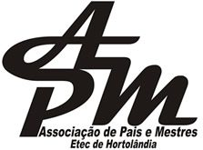

A Associação de Pais e Mestres (APM) é uma organização essencial dentro das escolas públicas, formada por pais, professores, funcionários e membros da comunidade escolar. O principal objetivo da APM é atuar de forma colaborativa para promover o desenvolvimento e o bem-estar de todos os alunos, fortalecendo a relação entre a escola e a comunidade.
Na ETEC de Hortolândia, a APM desempenha um papel importante, ajudando a criar um ambiente mais acolhedor e propício ao aprendizado. Essa associação trabalha em várias frentes, desde o apoio a atividades pedagógicas e culturais até a captação de recursos para melhorias na infraestrutura. Além disso, a APM colabora com a organização de eventos, projetos e outras iniciativas que enriquecem o dia a dia escolar, sempre com o foco em oferecer as melhores condições possíveis para o aprendizado dos estudantes.
Por ser uma ponte entre a escola e as famílias, a APM permite que os pais e responsáveis participem ativamente do processo educativo, contribuindo com ideias, sugestões e apoio para as atividades e melhorias na escola. Essa participação é fundamental para criar uma educação mais inclusiva, colaborativa e integrada à comunidade.